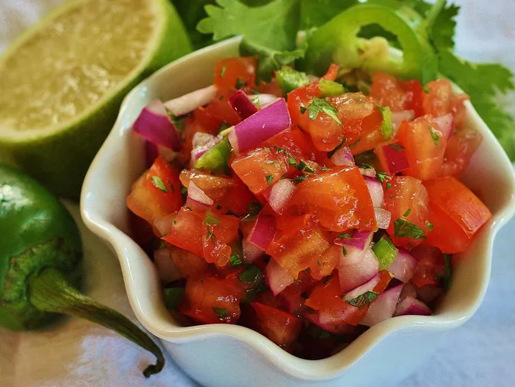

Salsa Fresca
Home

Description
My ex's mom had the best hand-chopped salsa fresca I have ever tasted. Over the years, I have tweaked her recipe to something my friends and family rave about. The trick for this salsa is marinating the onions and jalapeños in lime juice for about 5 minutes before adding the tomatoes and cilantro. Hope you enjoy!
Ingredients
- 1 cup finely chopped red onion
- 1 jalapeño pepper, seeded and finely chopped - or more to taste
- 2 limes, juiced
- 2 ½ cups Roma (plum) tomatoes, seeded and chopped
- ½ cup chopped fresh cilantro
- 1 teaspoon salt
- Mix red onion, jalapeño pepper, and lime juice in a bowl. Allow to stand for 5 minutes. Mix in tomatoes, cilantro, and salt; allow to stand 15 more minutes for flavors to blend.